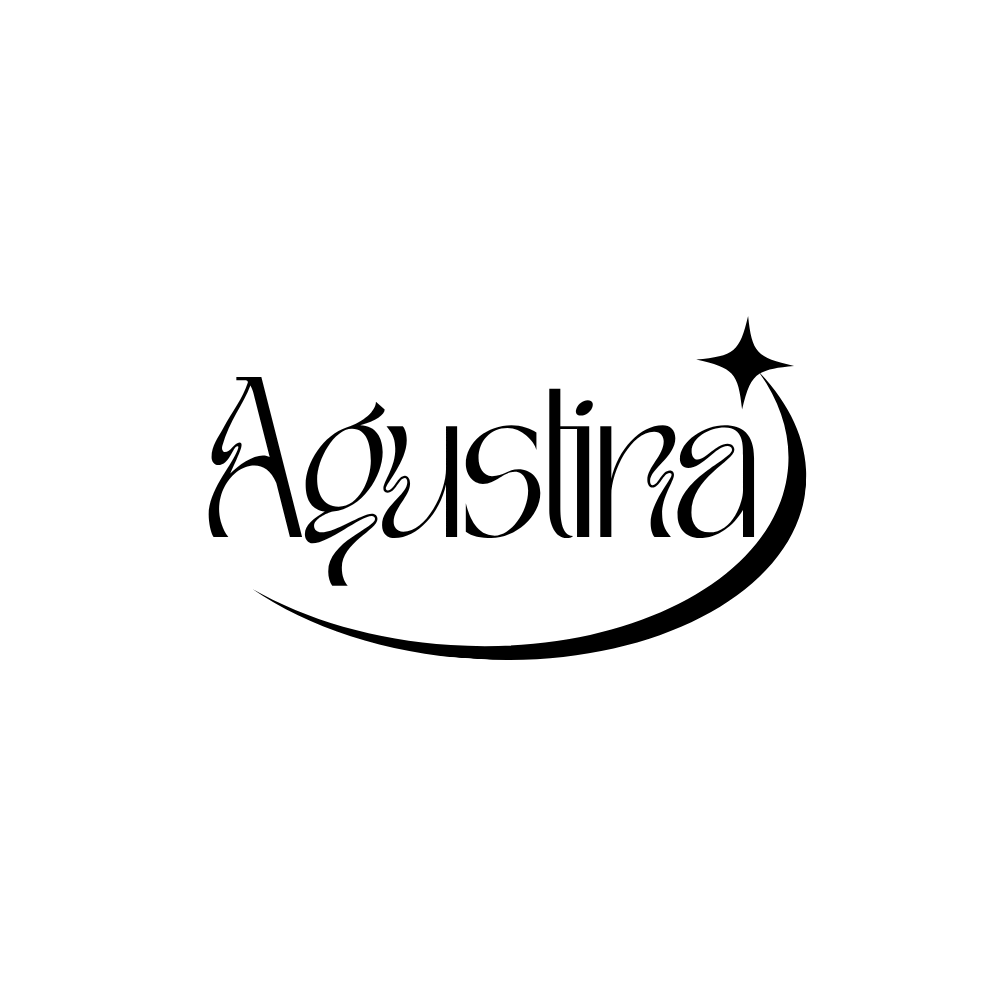

ꕤ
website
linux terminal thingy
un website que simula una terminal de linux, puedes probar comandos y ver como funcionan. hay easter eggs!
html, css, javascript

portfolio ꕤ 2026/ analista programadora full stack.
⠀⠀⠀⠀ ⠀⠀⠀⣀⠤⠔⠒⠒⡄⢀⣠⠤⠤⠦⡄⠀ ⠀⠀⠀⠀⠀⢀⡴⠋⠀⠀⠀⣀⠴⠊⣡⣴⣾⡿⣣⠃⠀⠀ ⠀⠀⠀⠀⢰⠋⠀⠀⠀⡤⠊⠁⣠⣾⡿⠟⣉⠴⠁⠀⠀⠀ ⠀⠀⠀⡠⠓⠀⠀⠀⠘⠁⢒⣿⠍⠓⠒⠉⠀⠀⠀⠀⠀⠀ ⠀⢠⠞⠀⠀⠀⠀⠀⠀⠀⠀⠀⠑⣄⠀⠀⠀⠀⠀⠀⠀⠀ ⠀⡏⠀⠀⠀⠀⠴⠂⠀⠀⠀⠀⠀⠘⢦⠀⠀⠀⠀⠀⠀⠀ ⢸⠘⠉⠀⠀⠀⣴⣶⢶⢀⠤⠀⠀⠀⠀⡇⠀⠀⠀⠀⠀⠀ ⠀⢷⣿⣵⣴⡆⢙⠉⡘⠟⠉⠁⠀⢀⡼⠁⠀⠀⠀⠀⠀⠀ ⢀⣾⡉⠣⠵⠶⠎⠉⠀⠀⠀⡠⠖⠛⠉⠉⠉⠙⢦⡀⠀⠀ ⠀⠊⠑⠂⠀⠤⣄⠀⠀⠀⠀⠀⠀⢀⣠⠄⠒⠀⠘⠁⠀⠀ ⣴⣒⠤⢤⡠⠔⡏⠀⠀⣀⠀⠀⠀⠀⠈⠙⠒⠢⢴⠑⢢⠀ ⠷⡀⠁⠀⠀⠈⡏⠑⠊⠉⠀⠀⠀⠀⠀⠀⠀⠀⠈⡇⢠⠁ ⠀⠈⠉⠉⠉⠉⠱⡀⠀⠀⠀⠀⠰⠀⠀⠀⠀⠀⠀⡏⠁⠀ ⠀⠀⠀⠀⠀⠀⢸⠉⠒⠤⠤⢤⡇⠀⠀⠀⠀⢀⢼⣇⠀⠀ ⠀⠀⠀⠀⠀⢠⠶⠿⠤⠤⠔⠛⡞⠦⣄⡠⡤⢊⣾⠟⠀⠀ ⠀⠀⠀⠀⠀⢱⣤⣤⣤⠠⢶⡿⠀⠀⠀⠙⠶⠽⠟⠀⠀⠀ ⠀⠀⠀⠀⠀⠀⠀⠉⠁⠀⠀⠀⠀⠀⠀⠀⠀⠀⠀⠀⠀⠀
me encanta el diseño, los colores pastel y el minimalismo.
me considero una persona proactiva, curiosa y me fascina la tecnología. siempre estoy buscando aprender y mejorar mis habilidades.
un website que simula una terminal de linux, puedes probar comandos y ver como funcionan. hay easter eggs!
html, css, javascript
un website donde puedes dibujar en un grid de 16x16 pixeles y dejar tu dibujo para siempre en el muro.
html, css, javascript
puedes escribirme a mi correo o contactarme por linkedin!
agustinasanchezmontoro@gmail.com